Home Screen
Giving the MATCHi app a real home screen, with one section I built myself in code using AI.
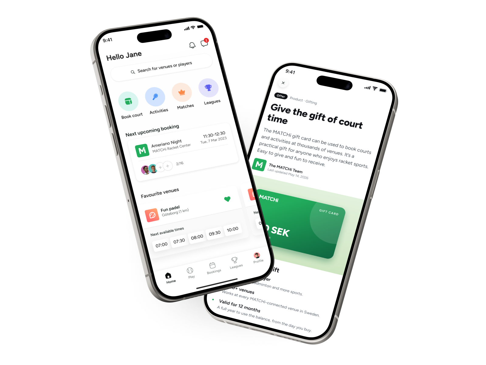
Project overview
Challenge
This started as one of my passion projects. I had a vision for a more appealing home screen, one that moved the app beyond purely transactional toward something more exploratory and social. At the time it wasn't seen as a priority, so I kept it in the back of my mind.
Over time the need became hard to ignore. We kept running into the same problem: there was nowhere good to put new features. Opening the app dropped you straight into the booking tab, a list of available times, with no real landing screen.
At an internal hackathon in late 2025, I teamed up with two frontend engineers to build a prototype, something concrete enough to prove the need rather than just argue for it. The prototype got people interested, and more of them came to understand its value. The home screen was picked up as a bet for our team during the following planning period.
My objectives
- Give the app a real home screen, a starting point rather than dropping users straight into the booking flow
- Shift the experience beyond purely transactional toward something more exploratory and social
- Build a flexible structure that could finally give new features a place to live
Design process
The first version was really a proof of concept. I iterated through a range of concepts quickly, without much upfront research, just to test whether the idea held up. I really believed in the idea of a home screen, so I teamed up with two front-enders to implement it during an internal hackathon.
It turned out to be a great PoC, and we got a lot of interest internally. Once it was picked up as a bet by my development team, the work became more structured. We broke the remaining work down into milestones and folded it into our sprint planning. I took the concepts forward into a final design, this time grounded in research and our own data.
The design review was a moment where other teams could provide input, and where feedback broadened my way of viewing the feature. And after shipping the initial version, we kept improving the home screen rather than treating it as done.
Competitive research
The app used to open directly onto court bookings, with no home screen to speak of. Since I wasn't refining something that already existed, the competitive research was about learning what a good home screen could be, not confirming a direction I'd already picked. I went in with two questions:
How do other apps balance booking and discovery?
Within racket sports, the answer was mostly "booking, very little discovery." The home screens I found clustered around two approaches. One kept things high level, essentially a launchpad of quick actions routing you on to other sections. Another centred the experience on your favourite marked venue, making it fast to rebook there, almost like a white-label app for a single club. Both were useful, but both treated the home screen as a way to get to a booking, not as a place to explore.
Where do they surface social features?
Barely. Across the racket sport apps, the home screen was doing very little socially. That made it more of an open opportunity in the category than a solved pattern, and a clear place to do something different.
To see how a home screen could do more, I looked outside racket sports at general booking apps. Even though they operate in different domains, they showed how a home screen can invite exploration, surfacing recommendations and browsable content alongside booking, without losing quick access to the core action.
Competitors treated the home screen mainly as a route to booking, with limited social features. I decided the concept should do both, keeping the quick booking access users rely on while making room for discovery and social features. Since these were rare among competitors, I decided to include them in my concepts, but communicate that the actual implementation could be scoped out to reach an initial release faster.
Baseline metrics
Adding a home screen meant changing the app's entry point. Instead of opening straight into booking, users now landed somewhere new first. That introduced a real risk, since anything that slowed down or distracted from booking could hurt the numbers the business relies on. So before rolling it out, we wanted to make sure the core booking experience wasn't affected negatively, and to see whether the home screen actually helped people discover more. I proposed the metrics I thought we should watch and presented them to our product manager, who then set up the tracking together with a developer.
Everything was measured as a comparison between users who had the home screen and users who didn't, using a feature flag to split the two groups.
I knew this first version was really a redesign of the app's entry points, not an engagement feature in itself. I didn't expect it to lift bookings or engagement on its own. On the core metrics, success meant holding steady; the real value was laying a foundation that more engagement-focused work could build on later.
Protecting the core experience
From opening the app through to completed payment.
Conversion for activity-type bookings specifically.
Watched to make sure the new screen didn't slow people down on their way to booking.
What we hoped to gain
Visits to Activities, Public Matches and Leagues.
Where users went next
The paths users took after landing on the home screen, to understand where it actually led them.
Concept generation
I started by listing the elements we already had to work with, then explored different ways of arranging them on the home screen:
- Shortcuts
- Favourite venues
- Venue search
- Notifications
- Chat messages
- Friends
I tried a range of approaches, from giving booking more space to treating it more as quick access. When it came time to narrow down, it was important that booking stayed easily accessible without taking up too much space, so there was room for discovery and the home screen stayed future-proof. The concepts below are just a selection of what I explored.
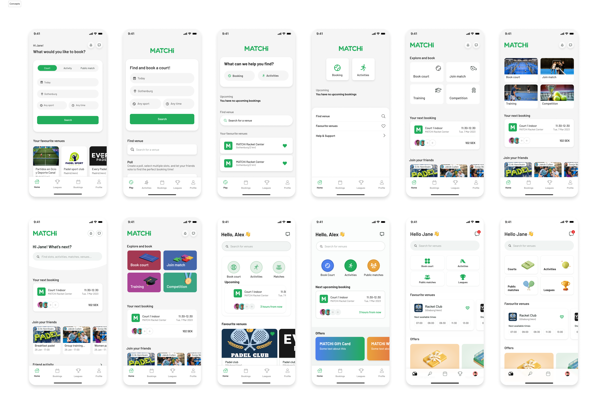
Spotting an opportunity
During the concept phase, I came up with the idea of using the home screen to front MATCHi's offers. The company had a separate initiative around selling gift cards but no natural place to surface it in the app, and the home screen felt like the right home for that and more. I anchored the idea with the commercial and marketing teams, who all thought it would be great. That's how the offers section came to be.
We landed on three offers to include:
- MATCHi gift card
- Wellness allowance
- MATCHi TV premium
Since offers aren't core to the booking experience, I kept the section on the home screen but placed it at the bottom, so it stays discoverable without competing with booking.
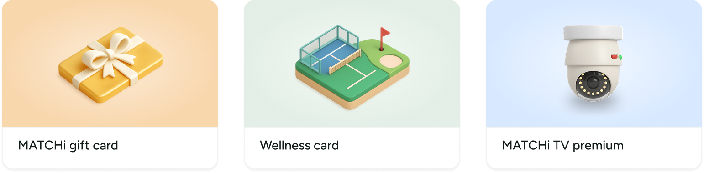
Design review
During the design review, I presented the home screen concept to the other designers, the product managers and our CPO. The PMs were mainly concerned about the impact on conversion. I assured them that we had tracking in place and would roll out gradually, so we could see the impact before any broader release.
The designers had more detailed feedback, so I arranged a separate session to go deeper on the design.
At the time, we had an ongoing project on the web that had updated our fonts and icons. The plan was to use this new look across all our products, but there was no clear decision on when each product would adopt it. Since the home screen was already a new experience in the app, the designers pushed to bring the new fonts and icons into this project, using it to roll out a fresh look and feel across the app.
One designer also pushed for something I had planned for phase two: showing friend recommendations on the home screen to bring in more dynamic content. Overall, the review pushed me to include more than I had scoped. I took it back to my team, and the engineers made a new estimate that we deemed feasible.
The concept held, but the review grew its scope: rolling out our new fonts and icons across the whole app, and pulling friend recommendations forward from a later phase. I was glad about it, since the refresh could ship in one go rather than piecemeal and friend recommendations added the dynamic, social content the home screen was built for. I confirmed with engineering it was still feasible.
Introducing new icons and a new font
The new fonts and icons came out of a separate web project, so the visual choices weren't mine to make. I took on updating the fonts across the whole app, while a developer handled the icons. It was my first time pushing code to our app, and I made the changes with Claude Code. It was amazing how smooth the actual work was.
The only real friction was the setup: getting everything configured and getting access to our mobile codebase. Once that part gets simpler, development will be genuinely accessible to everyone.
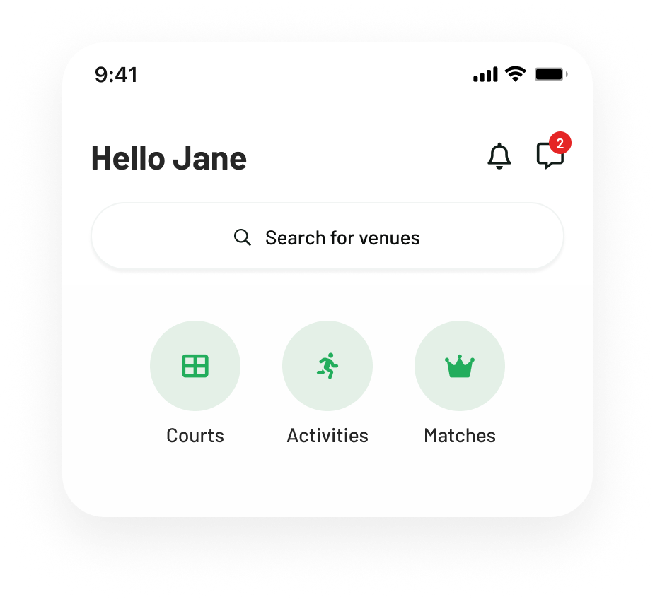
Test and release
I ran an internal beta with around 20 testers across iOS and Android. To keep the feedback structured and comparable, I asked everyone the same set of questions:
What was your first impression when opening the home screen?
Was it clear what you could do from the home screen? Anything confusing or missing?
👍 One thing you liked
👎 One thing you didn't like or would improve
Open thoughts, ideas, or reactions.
I then clustered the responses into themes and prioritized what to act on before the wider rollout.
"Discover" read as the wrong word; "More racket sport" confused English users.
Renamed Discover → Play, section → Offers.
A second venue was easy to miss, and the sort order felt unpredictable.
Added shadow + border, pinned times to today. Sorting by distance.
Booking a court felt less obvious than before; some warned of a release dip.
Trusting our metrics to give us real data to base any decision on.
Getting back from sub-pages was unclear, and Leagues got harder to find.
Added a back button. Re-added Leagues to the bottom bar.
Dark-mode contrast, nav-bar insets, a filter crash, past times in the carousel.
Fixed as a batch before release.
Clean but a little flat; wanted stats, streaks or an upcoming-bookings view.
Captured for later improvements.
"Players you might know" kept showing people after a request, and felt random.
Hid sent/connected players. Forwarded the feedback to the data team responsible for the recommendations engine.
Promoting our own offers prominently could unsettle venue partners.
Aligned on a principle: as long as we sell our own offers, we shouldn't be afraid to promote them.
Rollout
We rolled out gradually behind the feature flag, expanding in stages and checking the metrics held at each step. It took longer than our usual rollout because I was away on vacation partway through, and since there was no rush, the team held off on widening until I was back. We also wanted it to sit around 50% for a while, to get a clean comparison between the two A/B groups.
Starting small paid off. Because of an internal miscommunication, we hadn't been told that gift cards and wellness cards only apply to Swedish venues, so they were showing to users who could never use them. We caught it at 5%, added a feature flag to hide them for non-Swedish users, and widened from there.
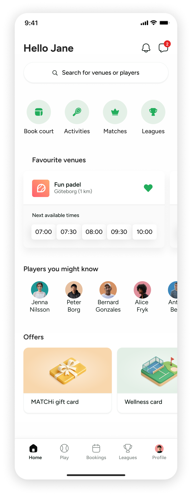
What was shipped
Header
A personal greeting with quick access to notifications and chat.
Search
A prominent search for both venues and players. Player search used to be buried in the profile, with no natural place to surface it.
Quick access
Shortcuts to the main things people come to do: book a court, browse activities, matches and leagues.
Favourite venues
The venues you've added as favourites, with their next available times so rebooking is fast.
Players you might know
A social nudge, suggesting people to connect and play with.
Offers
A place to surface MATCHi's own offers, the first of its kind in the app, without crowding the booking flow.
Bottom navigation bar
Updated the profile tab to show the user's photo instead of a generic avatar, and refined the spacing and alignment.
Follow-up on metrics
For the cleanest read I compared the two A/B groups during the week the rollout sat at roughly 50/50, rather than before and after release. A before-and-after view is noisy: booking behaviour shifts with things unrelated to the home screen, like weather, holidays and red days. Comparing both groups in the same week holds those constant, so any difference is more likely down to the home screen itself.
I'd still treat this as a signal, not hard proof. It's a single week and not a fully controlled experiment. But the direction was consistent: the group with the home screen booked faster and converted better, most clearly on booking speed.
Increase with the home screen versus without, in percentage points (same-week A/B).
The booking speed result surprised me most. The home screen sits in front of the booking flow, so I expected it might slow people down a little. Instead they booked faster, and the conversion lift was just as unexpected given the same worry.
My read is that the home screen isn't really an extra step, it's a better starting point. Favourites with their next available times, quick access and search send people toward a booking more directly than dropping them straight into the flow ever did. Adding a screen didn't add friction, because the content earned its place. That was the whole bet, and the early signal says it held.
If I could change one thing in the app and lift booking conversion by just one percent, that would be amazing. Take a moment to understand how impactful this change is.
– MATCHi CTO
A solid foundation
The home screen has opened up possibilities for new and existing features that would have been hard to surface in our previous app.
I want to highlight a few of them. Two are good examples of how the home screen can be put to use, and one I'm especially proud of, because I took it all the way from design through to code myself.
Recommended activities
Together with our frontend lead and the data team, I took on a side bet to bring recommended activities to the home screen, a way to make it feel more dynamic and tailored to each player.
Finding the right activity used to mean scrolling through a list that was the same for everyone. Now the home screen surfaces upcoming activities chosen for you, based on what you play, when you play and who you play with. The new "Recommended for you" feed is different for every player. It learns from how you book and play, and puts the activities most relevant to you first.
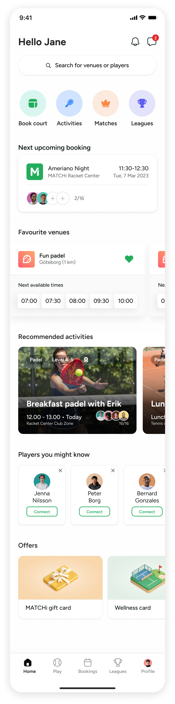
Alongside the recommended activities, I took the opportunity to improve a couple of things on the existing design, since we were already making changes here.
The quick access icons were all the same green, which made them blend together. Giving each one a dedicated color makes them quicker to tell apart at a glance.
The old "Players you might know" cards didn't make the action obvious. To do anything, like add someone as a friend, you first had to open their profile. The redesign brings the action onto the card itself, with a clear connect button and the option to dismiss a card to see someone new.
Articles using AI
I'm always looking for ways to improve the design, and one thing that bothered me was how static the Offers section was. For players outside Sweden we could only show MATCHi TV premium, so it barely felt like an offers section at all.
To change that, I thought about ways to keep the section more alive and landed on a new concept: moving Offers into Articles. To make the section feel full for players outside Sweden too, I reworked the existing offers into a more article-style format and added two new ones.
Articles opens up a place where designers and the marketing team can create and manage more curated content. It's built to be flexible in what we can add, so the section is easy to keep up to date whenever we want to surface something new.
I wanted it to feel like news articles or blog posts, so I looked across different apps for inspiration. When I found something I liked, I brought it into Claude Design and used it to generate concepts. I picked out the parts I liked and, just to experiment, asked Claude Code to recreate them in Figma. I showed this to a few stakeholders, and they all thought it was a clear improvement.
Rather than wait for a developer to pick it up, I wanted to try building it myself, just to see if I could take a feature all the way. I branched off main and implemented all the articles. I got help reviewing the code, and after a few changes it was ready to merge.
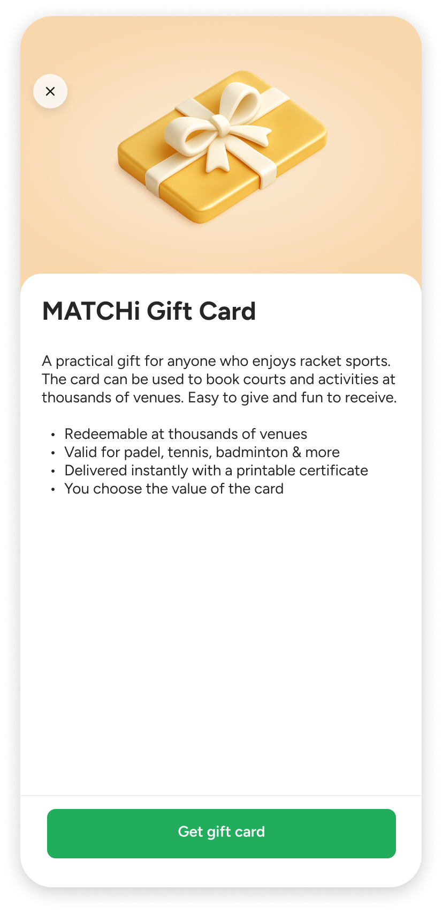
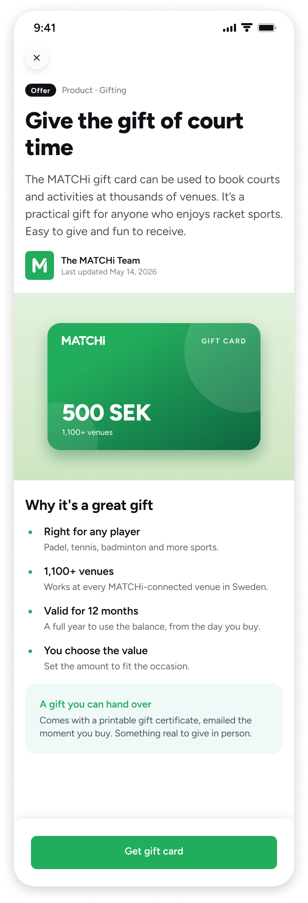
Evolution
The home screen has come a long way. Before, the app opened straight to the booking tab, with the old font and icons. The first release introduced the home screen itself, and today it has grown into a space other teams also use to surface relevant content.
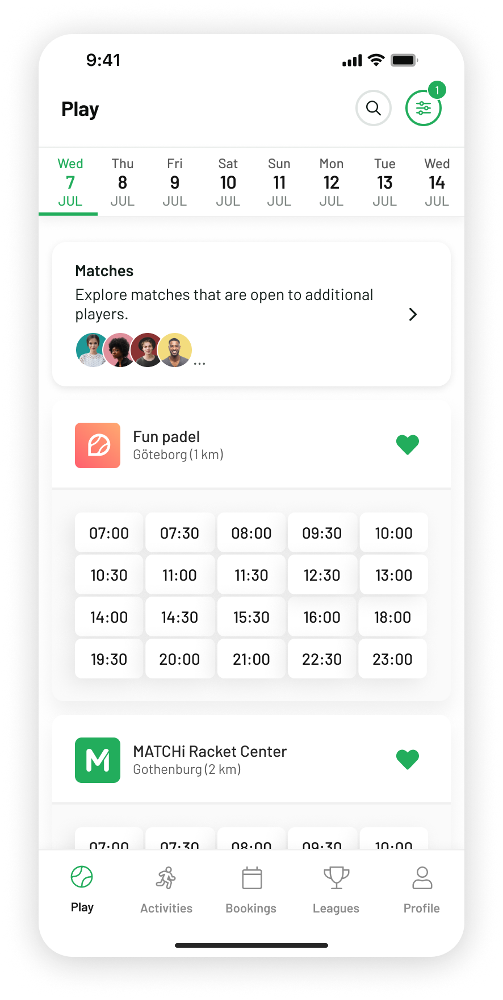
Before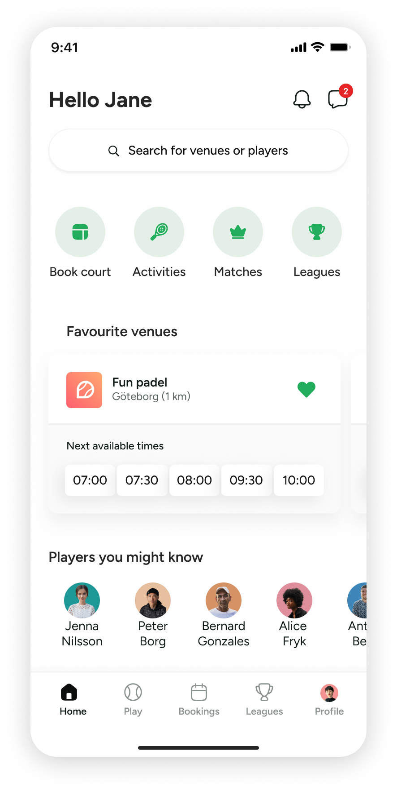
First release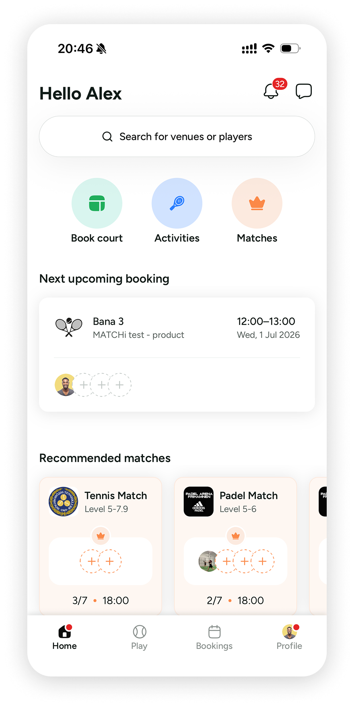
TodayFinal thoughts
Anyone who's worked closely with me knows the home screen has been a bit like my baby. It's a project I fought for, and one our previous CPO turned down because he couldn't see the value in it. What I took from it is that when you believe in something, sometimes you just have to make it tangible for people to grasp the concept. And the further you take it, into a prototype, into real code, the more likely it is to get approved.
This is one of the few bets I've been able to keep iterating on and improve over time. I think that comes down to two things: working with developers who genuinely care about the product, and the lower threshold for me to build things in code myself, which let me contribute on a new level. It's a reminder of how much it matters to work with people who share a product mindset.
Not long ago I ran into a former colleague who had left three years before this project even started. He said, "I'm happy to see you finally got your home screen out." I'd clearly been talking about it for a long time, so it means a lot to see it live.